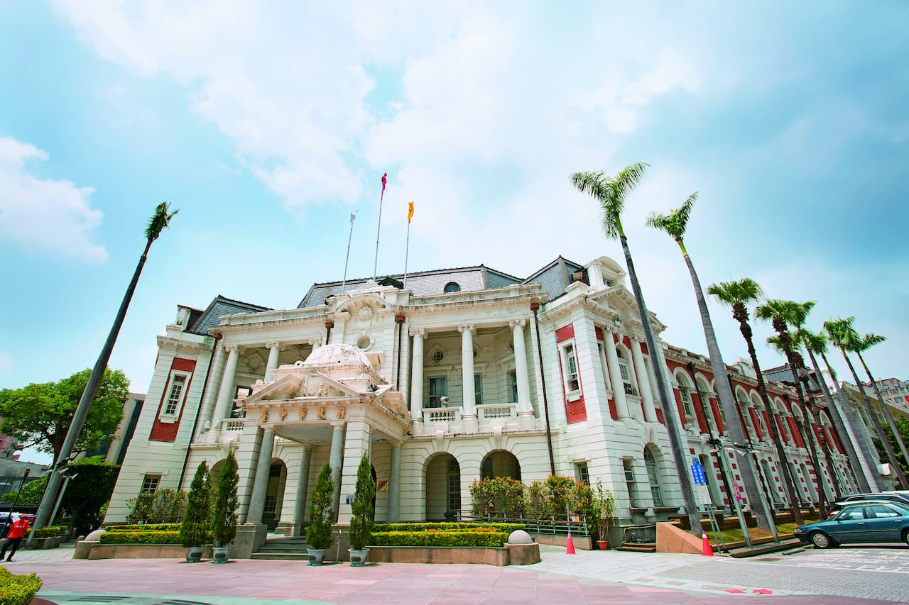

臺北的日落
臺北是中華民國首都暨直轄市。
為臺灣的政治、經濟、商業、文化、教育、學術研究等各領域的首善之區和發展中心。

高雄城市美景
高雄市為臺灣的六都之一。
高雄全年陽光普照、氣候宜人，人民既純情又熱情，這個有山、有河、有海、有港的城市。

台中擁有臺灣的京都之稱
日治時期因日人刻意打造成現代化城市，以市區改正政策將早期的市區規劃整然有致
整治流經市區的綠川和柳川，植有柳樹，幽靜美麗，彷若京都鴨川，素有「臺灣的京都」之美譽。

台灣的古蹟
Monuments in Taiwan
臺灣在漫長的歷史演進過程裡，留下許多古老的建築。這些建築見證了一個又一個時期裡所經過的事情，也代表著不同族群的生活情況，它們經過了時間的考驗而留存下來，我們稱為「古蹟」。

台灣的美食
Taiwan's delicious food
夜市是臺灣非常特殊有趣的文化，在夜市可以吃到琳琅滿目的小吃美食，每個夜市都有不同的特色與風味，品嚐小吃，可以更認識地方特產、文化故事，享受臺灣特有的旅遊風采喔！

台灣的景點
Landscape of taiwan
臺灣以高山聳立聞名國際，是個有名的『高山島嶼』。三千公尺以上的高山，比比皆是，而將近四千公尺的玉山，更是東北亞的第一高峰。也因地理資源的豐沛，臺灣擁有許多特殊地形及奇特的地理景觀。
喔熊OhBear
外型可愛又酷的喔熊（Oh！ Bear），角色設定從小在玉山長大，行腳走遍全臺灣，堪稱是全臺最萌、最具療癒的吉祥物，生日就訂為12月３日；星座：射手座；身高：170公分；體重：很久不敢站在體重機上面，目測應該超過 210公斤；最喜歡的顏色：橘色；最喜歡的飲料：珍珠奶茶；最喜歡的食物：滷肉飯（最好加滷蛋）；個性：外表看起來嚴肅，但碰到夢中情人（保密中）早上跟他打招呼，或是吃到珍珠奶茶、滷肉飯，整天就會呈現幸福洋溢的樣子。